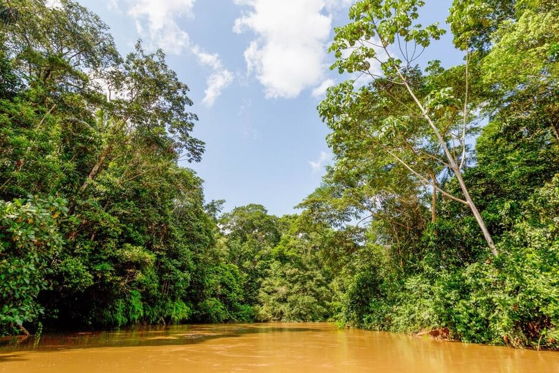

ДЖУНГЛИ АМАЗОНКИ
В лесах Амазонки - сельве - скрыто немало тайн: даже сегодня многие крупные притоки Амазонки не исследованы. Из 15000 видов амазонских животных тысячи птиц и рыб, а также сотни млекопитающих не классифицированы. Из животных на Амазонке можно встретить: ягуара, тапира, пекари, паукообразную обезьяну, ленивца, броненосца, кайманского крокодила, пресноводного дельфина, боа, анаконду. Из лесных птиц - тукан, попугай, ара, калибри, а также хищная птица гавиао. Из насекомых - больше 1800 видов бабочек и свыше 200 видов москитов. Рыбы, такие как пиранья, тукунаре, пирараку, ануанa, пираиба, пораке (электрический угорь).

Настоящее приключение начнется, когда отправляемся на лодке вглубь девственного леса. В некоторых местах река достигает 30 километров в ширину. В Амазонке сосредоточена 1/5 часть мировых запасов пресной воды. По пути часто попадаются небольшие пассажирские судна, курсирующие между поселениями. Как капитаны справляются с капризным течением реки остается загадкой. Во время сезона дождей огромные территории джунглей затапливаются. Местами уровень воды в реке поднимается на 10 метров. По этой причине дома строят на высоких столбах. Жизнь в центре амазонских лесов нелегка не только из-за климата. Когда каучуковый бум остался в прошлом единственным средством существования населения стали рыболовство и охота. Есть старая индейская легенда о девочке, которая утонула в реке, потянувшись к отражению луны. Луна сильно огорчилась, ей было так сильно жаль девочку, что она превратила ее в растение, которое всегда находится на поверхности воды. Так, согласно легенде, появилась кувшинка виктория регия, то есть королевская. Самый большой водный цветок в мире.
Диаметр может достигать 2-х метров. Вот почему местные жители иногда используют ее вместо одноместной лодки, чтобы перебраться на другой берег реки.
Бассейн реки Амазонки – крупнейший тропический дождевой лес в мире площадью более 6 миллионов км2.
Люди поселились на территории Джунглей Амазонки минимум 11200 лет назад. Сам же Тропический лес Амазонки существует свыше 55 миллионов лет.
Тропические леса Амазонки составляют более половины общей площади оставшихся тропических лесов всей нашей планеты.

20% кислорода Земли вырабатывается тропическим лесом Амазонки, поэтому его часто называют «лёгкими планеты».
Амазонка - самая полноводная река мира. Она выносит в Атлантический океан до ⅕ стока всех рек мира. Река Амазонка и ее притоки собирают воду с территорий 9 государств: Перу, Бразилии, Колумбии, Венесуэлы, Эквадора, Боливии, Гайаны, Суринама, Французской Гайаны.
Около 80% пищи, которую мы едим, родом из тропических лесов – рис, картофель, помидоры, бананы, кофе, шоколад, кукуруза, ананасы и мн.др.
Около 400-500 коренных индейских племен на сегодняшний день обитают в тропических лесах Амазонки. Считается, что около 75 из этих племен никогда не имели контакта с внешним миром.
Город Икитос (Перу) – самый крупный город мира, не имеющий сухопутного сообщения с другими городами. Он расположен глубоко в джунглях и насчитывает свыше 400 000 жителей.
Ягуары, пумы, обезьяны, ленивцы, кайманы, анаконды, копибары, черепахи, речные дельфины, попугаи, туканы, колибри и многие-многие другие обитатели джунглей являются частью всемирного наследия человечества. По числу видов животных и растений джунгли Амазонки намного превосходят тропические леса Африки и Азии.
Один из монстров джунглей Амазонки - черный кайман. Шкура у этих рептилий черного окраса, некоторые представители вида имеют практически черную расцветку, которая хорошо помогает хищникам во время охоты в темное время суток. К тому же такая расцветка способствует поглощению солнечных лучей.
Размеры взрослых самцов достигают 2,8-4,3 метра, но некоторые представители вида могут дорастать до 5 и более метров. Вес рептилий колеблется в пределах 300 килограмм. Самые крупные самцы весят более 400 килограмм. Из различных источников известно, что черные кайманы могут достигать в длину 6 метров и весить 1100 килограмм. Самки, в сравнении с самцами, имеют более скромные размеры – длина их тела составляет 2,5-3,35 метра, а весят они от 120 до 160 килограмм.
Кто хоть раз бывал в таинственном мире южноамериканских джунглей, наверняка слышал от местных жителей жутковатые истории, главной героиней которых выступает «гроза всего живого», «ненасытная утроба», «чудовище из речных глубин», «амазонский душитель». Эти леденящие кровь эпитеты относятся к Eunectes murinus, анаконде.
Эта змея носит титул крупнейшей в мире — длина взрослой особи составляет 6—7 метров, хотя встречаются экземпляры и 11—12 метров. Представляете? Это же высота пятиэтажного дома!
Миф про "кровожадное" существо - пиранью начался, когда американский президент Теодор Рузвельт посетил Амазонию Бразилии в 1913 году. Его сопровождали многочисленные журналисты, и бразильцы организовали ряд уловок, одной из которых было то, что президент якобы "обнаружил и открыл" новую реку, которая потом была названа в его честь. Был выбран один из притоков реки Арипуанан, он и сегодня по-прежнему упоминается как Рио-Рузвельт или Рио-Теодоро.
Когда Рузвельт прибыл к реке, бразильцами был подготовлен сюрприз - участок в несколько сотен ярдов был перекрыт, в течение нескольких недель рыбаки выпускали туда сотни взрослых пираний и изолировали их там. Они сообщили президенту что, он и его люди должны воздержаться от входа в воду, так как они будут съедены заживо ужасно-злобными рыбами. Естественно, эта новость была встречена со скептицизмом, тогда туда загнали корову. Это вызвало зрелищную, неистовую борьбу за право получить "свой кусок" среди помещенных в ловушку, голодных пираний. После этого события газеты были заполнены рассказами о страшных, плотоядных рыбах, но там не осталось ни одной записи об убийстве человека дикими пираньями.
Cкумбриевидный гидролик, рыба-вампир или паяра (лат. Hydrolycus scomberoides) быстрый и агрессивный хищник, достаточно раз взглянуть на ее пасть, чтобы отпали все сомнения. Такие зубы редко увидишь даже среди морских рыб, не то что среди пресноводных.
Вырастает она очень большой, до 120 см в длину, и весить может до 20 кг.